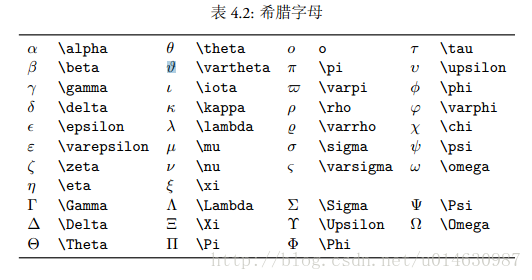
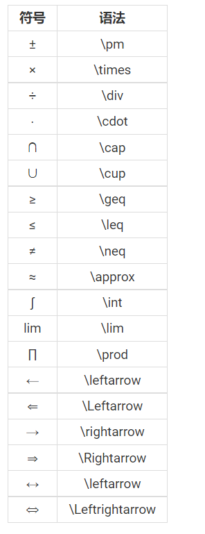

LaTex 语法
目录检索
- 如何在MarkDown文本中插入 $LaTex$ 公式。
$LaTex$ 数学公式简介
求和公式 $\sum$
平方 $n^2$
下标 $CO_2$、$KMnO_4$、$Mn_2O_7$
方框 boxed $\boxed{f(x)=ax^2+bx+c}$
根号 $\sqrt n$
希腊字母，例如 $\alpha$ 、 $\beta$ 、 $\gamma$ 、 $\Delta$
分数的表示 $\dfrac{1}{2}$ 与 $\frac{1}{2}$
某些运算符号 如：$ \times \cdot \pm \div $ 等
括号的表达 $(\{[$
长公式的表达
Now , Let’s enjoy $LaTex$ !
Part 1:如何在MarkDown文本中插入 $ LaTex $ 公式。
在Markdown中插入 $LaTex$ 一共有两种形式，
单行行内插入: $ \sum $
我们可以看到，单行插入使用$$$$符号将 $LaTex$ 公式包裹起来，其实现效果如下:
单行行内插入: $\sum$
独立公式: $$ \sum $$
独立公式单独占一行，每侧使用两个$将 $LaTex$ 公式包裹起来，其实现效果如下：
独立公式：
$LaTex$ 数学公式简介
求和公式:
求和公式的格式为 $ \sum_{i=0}^{100}i $
效果如下：
其中\sum不可改变，_{i=0}表示i=0为下标，^{100}表示100为上标。
因此，也可以反过来写$ \sum^{100}_{i=0}i $
效果同$ \sum_{i=0}^{100}i $。
平方（上标）
平方的语法非常简单$ n^m $
它表示n的m次方，效果如下
下标
有时候，我们被迫写一些化学式的时候怎么办？
这个时候就用到我们的下标啦！
其语法为$ N_m $
效果为
举例：$H_2O$、$CH_3COOH$
$H_2O$ $CH_3COOH$
方框
方框的语法 $ \boxed{} $ ,在{ }中可以填充我们需要框起来的公式(在\boxed{ }里的仍需要遵循$LaTex$语法)
$ \boxed{a= \dfrac{\Delta x}{t}} $
$ \boxed{a= \dfrac{\Delta x}{t}} $
根号
根号的语法为 $ \sqrt{} $ ，在\sqrt参数括号里的可以是$LaTex$公式。
$ \sqrt{n} $
$ \sqrt{a^2+b^2} $
希腊字母
希腊字母的$LaTex$需要遵循以下语法:

其中需要注意的，如果在代码中以大写字母开头，则说明在希腊字母中，其为大写，反之亦然。
常用的有像 $ \Delta $ 、 $ \alpha $ 、 $ \beta $ 、 $ \gamma $ 、 $ \pi $ 、 $ \varphi $ 等
分数的表示
分数的句法为 $ \frac{}{} $ 或者 $ \dfrac{}{} $ 或者 $ \tfrac{}{} $。
三者唯一的区别在字号上。
$ tfrac < frac < dfrac $
我们以$\dfrac{1}{2}$为实例
tfrac:$\tfrac{1}{2}$
frac:$\frac{1}{2}$
dfrac:$\dfrac{1}{2}$
运算符

括号的表达
最基本的括号的表达:
( : $ ( $
{ : $ \{ $
[ : $ [ $
⟨ : $ \langle $
⟩ : $ \rangle $
扩展与提高
$$ \bigg(\Big(\big((1+1)\big)\Big)\bigg) $$
我们可以看到，最里面的()不用加特殊修饰，其他按照大小依次加了修饰的\
其中，大小关系为
1 | ( |
以此类推。
长公式的表达
长公式
1 | \begin{split} |
我们使用
1 | \begin{split} |
作为长公式的框架，以&作为标记对齐的地方，以\\作为换行的地方。
公式组
1 | \begin{align} |
同理，我们只是把长公式中的split换成了align,其他没有变，即：以&作为标记对齐的地方，以\\作为换行的地方。
我们只要把\begin和\end后面的换成cases便可以使用大括号
1 | \begin{cases} |